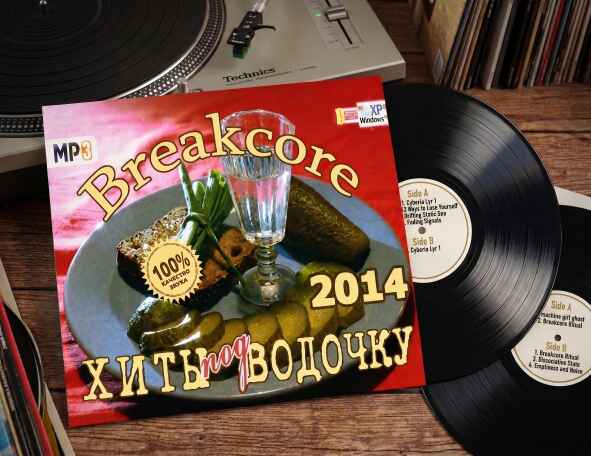

Usedcvnt — Ultraviolet
Культовий атмосферний реліз на фізичних носіях (CD, Vinyl, Cassette). Рідкісне лімітоване видання на прозоро-димчастому вінілі (Smoky Clear) із фірмовими мелодійними текстурами та динамічним брейккором.
«Вініл-Клуб» — це вебплатформа та спільнота для тих, для кого прослуховування музики залишається особливим ритуалом, а не фоновим шумом. Ми створили структурований каталог, орієнтуючись на стандарти міжнародної музичної бази даних Discogs, де кожен реліз містить перевірений трекліст, дані про лейбл та оцінки спільноти. Ви можете одразу переглянути перелік наших послуг і переваг для замовлення.
«Вініл — це не просто формат аудіо. Це фізичний зв'язок із музикою: момент, коли ти дістаєш платівку з конверта, опускаєш голку на доріжку й слухаєш альбом від першої до останньої секунди так, як його задумав автор.»

Культовий атмосферний реліз на фізичних носіях (CD, Vinyl, Cassette). Рідкісне лімітоване видання на прозоро-димчастому вінілі (Smoky Clear) із фірмовими мелодійними текстурами та динамічним брейккором.
Лімітований подвійний мармуровий вініл (Black Ice & White Marbled LP) із власним каталожним номером CYN-003. Фірмовий синтез брейккору, драм-енд-бейсу, джанглу та важкого габберу.
У каталозі представлено сотні платівок різних жанрів: від перевіреної часом класики до експериментальної електроніки та сучасного інді. Будь-який альбом із бази можна замовити напряму додому — як стандартні видання, так і рідкісні колекційні релізи.
Ми розуміємо цінність вінілу, тому безпеці відправлень приділяється ключова увага. Важливо: кожна платівка проходить ретельну візуальну перевірку стану й упаковується у спеціальний захисний тришаровий картон, що гарантує повне збереження кутів конверта та ідеальний стан звукових доріжок під час транспортування. Окрім купівлі, ви можете оцінювати прослухані альбоми, формувати власні віртуальні списки бажань і ділитися враженнями з однодумцями.